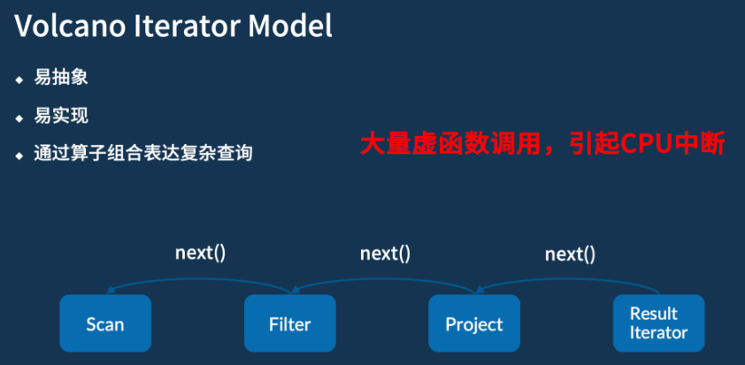
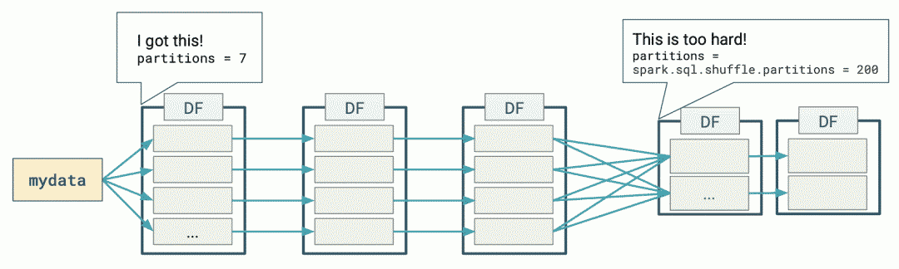
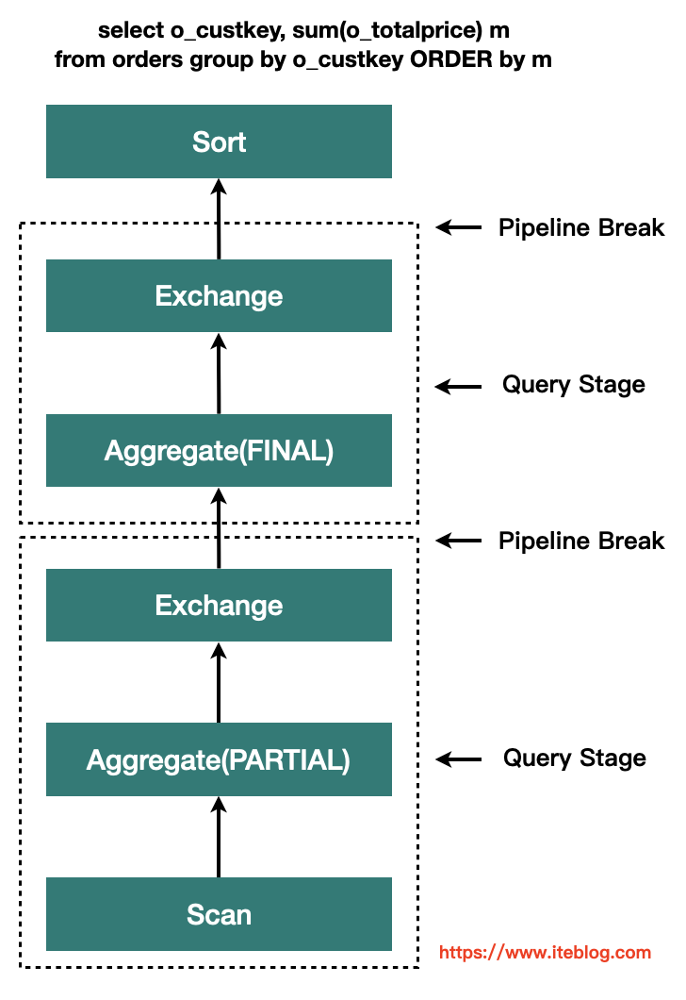
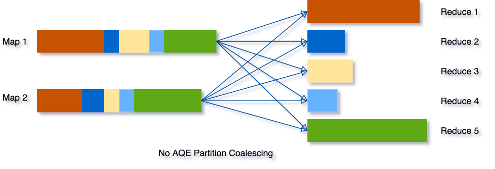
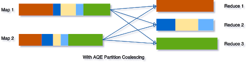
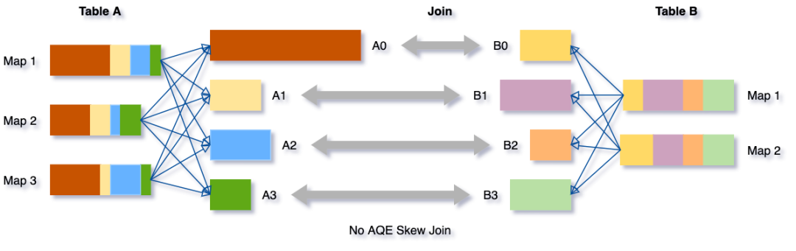
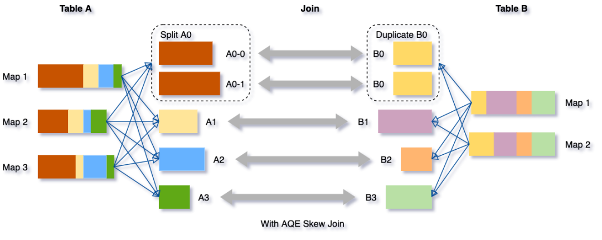
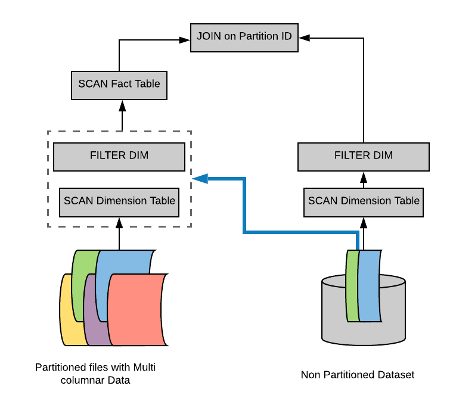
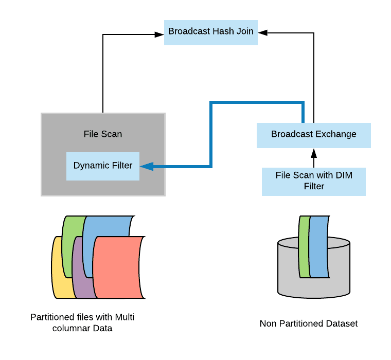

Spark SQL 原理特性
向量化执行和代码生成
Java向量化
向量化代码：
Java代码向量化执行：
- 自动的：不能手动控制，只能由 JVM 自动处理。没有办法做到像 C++ 一样直接调一个底层的 CPU 指令；
- 隐式的：代码层面无法找到向量化的显式调用，整个过程是隐式的，比如上面的 for 循环被向量化执行；
- 不可靠的：依赖于 JVM 运行期的热点代码跟踪以及 JIT ，所以整个过程是不可靠的；
火山迭代模型（Volcano Iterator Model）
现在大多数大数据系统或者说数据库底层，对 SQL 进行处理时通常会采用的模型。
模型具有易抽象、易实现、以及能够通过算子组合表达复杂查询这三个优势。
- 大量虚函数的调用，就可能会导致 CPU 的中断和耗时

Spark Code Generation
- 减少基本类型的自动装箱；
- 避免多态调用（火山迭代模型）；
- 利用SIMD批量处理数据（JVM向量化）；
- 其它Fix（算子融合/缩减栈深）；
整体Stage代码生成（Whole-stage code generation）
使得计算引擎的物理执行速度能达到 hard code 的性能：
- 对物理执行的多次调用转换为代码 for 循环，减少中间执行的函数调用次数
示例：select count(*) from store_sales where ss_item_sk = 1000
通常物理计划的代码是这样实现的：
class Filter(child: Operator, predicate: (Row => Boolean)) {
def next(): Row = {
var current = child.next()
while (current != null && !predicate(current)) {
current == child.next();
}
return current
}
}
但是真正如果我们用 hard code 写的话，代码是这样的：
原因：
- 避免virtual function dispatch；next()等函数调用在操作系统层面，会被编译为virtual function dispatch。
- 通过CPU Register存取中间数据，而不是内存缓冲：在Volcano Iterator Model中，每次一个operator将数据交给下一个operator，都需要将数据写入内存缓冲中。然而在手写代码中，JVM JIT编译器会将这些数据写入CPU Register。
- Loop Unrolling 和 SIMD；
自适应查询执行设计（AQE，Spark 3.0）
下图表示了使用 DataFrames 执行简单的分组计数查询时发生的分布式处理：

Spark 在第一阶段（stage）确定了适当的分区数量，但对于第二阶段，使用默认的分区数 200，即使手动设置分区数，但是也有以下挑战：
- 每个查询都设置这个属性是非常繁琐的；
- 随着业务的变化，之前设置的值可能会过时；
- 这个设置将应用于同一个程序里面的所有 Shuffle 操作中。
基于精确的运行时统计信息进行优化，引入了 Query Stages 的概念，以 Query Stage 为粒度，进行运行时的优化

Query Stage 是由 Shuffle 或 broadcast exchange 划分的，在运行下一个 Query Stage 之前，上一个 Query Stage 的计算需要全部完成，这是进行运行时优化的绝佳时机，因为此时所有分区上的数据统计都是可用的，并且后续操作还没有开始。
参数
spark.sql.adaptive.enabled：是否开启自适应优化，默认true。
自适应调整分区数
Spark 将会把连续的 shuffle partitions 进行合并（coalesce contiguous shuffle partitions）以减少分区数。
相关参数：
spark.sql.adaptive.coalescePartitions.enabled：是否开启自适应分区缩减，默认true；
spark.sql.adaptive.advisoryPartitionSizeInBytes：自适应分区所见的分区的划分大小，默认64MB；
spark.sql.adaptive.coalescePartitions.minPartitionSize：自适应分区所见的分区的最小大小；
spark.sql.adaptive.coalescePartitions.parallelismFirst：根据集群默认并行度，设置分区大小（尽可能利用资源并发），而不是根据advisoryPartitionSizeInBytes，默认true，推荐false；
示例如下图所示：
- 三个非常小的分区，为每个分区启动一个单独的任务将是一种浪费；
- 使用 AQE 之后，Spark 将这三个小分区合并为一个，最终的聚合只需要执行三个任务，而不是五个。


动态将 Sort Merge Joins 转换成 Broadcast Joins
Spark 估计参加 join 的表数据量小于广播大小的阈值（spark.sql.autoBroadcastJoinThreshold）时，其会将 Join 策略调整为 broadcast hash join。但是，很多情况都可能导致这种大小估计出错，比如表的统计信息不准确等（且统计信息只能支持Hive或者文件系统）。
AQE，Spark 可以利用运行时的统计信息动态调整 Join 方式，只要参与 Join 的任何一方的大小小于广播大小的阈值时，即可将 Join 策略调整为 broadcast hash join。进一步将常规的 shuffle 优化为本地化 shuffle来减少网络流量。
参数：
-
spark.sql.adaptive.autoBroadcastJoinThreshold：自适应优化的Broadcast表的阈值，默认同spark.sql.autoBroadcastJoinThreshold，10M； -
spark.sql.adaptive.localShuffleReader.enabled：sort merge转为broadcast join时，是否开启本地读shuffle数据，默认true；
动态将Sort Merge Joins转换为 Shuffled hash join
AQE converts sort-merge join to shuffled hash join when all post shuffle partitions are smaller than a threshold。
参数
spark.sql.adaptive.maxShuffledHashJoinLocalMapThreshold：使用 build local hash map的分区最大大小；
动态优化倾斜的 join
AQE 倾斜 Join 优化从 shuffle 文件统计信息中自动检测到这种倾斜。然后，它将倾斜的分区分割成更小的子分区，这些子分区将分别从另一端连接到相应的分区。
假设表 A join 表B，其中表 A 的分区 A0 里面的数据明显大于其他分区。

将把分区 A0 分成两个子分区，并将每个子分区 join 表 B 的相应分区 B0。

如果没有这个优化，将有四个任务运行 sort merge join，其中一个任务将花费非常长的时间。在此优化之后，将有5个任务运行 join，但每个任务将花费大致相同的时间，从而获得总体更好的性能。
参数：
- spark.sql.adaptive.skewJoin.enabled ：是否启用倾斜 Join 处理；
- spark.sql.adaptive.skewJoin.skewedPartitionFactor：如果一个分区的大小大于这个数乘以分区大小的中值（median partition size），并且也大于
spark.sql.adaptive.skewedPartitionThresholdInBytes这个属性值，那么就认为这个分区是倾斜的。 - spark.sql.adaptive.skewedPartitionThresholdInBytes：判断分区是否倾斜的阈值，默认为 256MB，这个参数的值应该要设置的比 spark.sql.adaptive.advisoryPartitionSizeInBytes 大。
动态分区裁减（Dynamic Partition Pruning，简称 DPP）
开启了动态分区裁减，那么 AQE 将不会被触发。
假设我们有一个具有多个分区的事实表(fact table)，为了方便说明，我们用不同颜色代表不同的分区。另外，我们还有一个比较小的维度表(dimension table)，维度表不是分区表。
Select * from iteblog.Students join iteblog.DailyRoutine where iteblog.DailyRoutine.subject = 'English';
在逻辑计划和物理计划上都有实现：
- 在逻辑计划阶段就知道事实表需要扫描哪些分区：在逻辑计划层面，通过维度表构造出一个过滤子查询，然后在扫描事实表之前加上这个过滤子查询。但是，物理计划执行起来还是比较低效。因为里面有重复的子查询（每个分区都需要获取子查询的结果），需要找出一种方法来消除这个重复的子查询。

- 避免扫描无用的数据：在物理计划层面，在维度表上运行上面构造的过滤，然后将结果广播到事实表端，从而达到避免扫描无用的数据效果。
在 broadcast hash join 中大表进行 build relation 的时候拿到维度表的广播结果(broadcast results)，然后在 build relation 的时候(Scan 前)进行动态过滤，从而达到避免扫描无用的数据效果。具体如下：

如果将spark.sql.optimizer.dynamicPartitionPruning.reuseBroadcastOnly设置为false，那么 DPP 也可以在其他类型的 Join 上运行，比如 SortMergeJoin。在这种情况下，Spark 将估计 DPP 过滤器是否确实提高了查询性能。DPP 可以极大地提高高度选择性查询的性能，
动态分区裁剪适用条件
并不是什么查询都会启用动态裁剪优化的，必须满足以下几个条件：
spark.sql.optimizer.dynamicPartitionPruning.enabled： 参数必须设置为 true，不过这个值默认就是启用的;- 需要裁减的表必须是分区表，而且分区字段必须在 join 的 on 条件里面;
- Join 类型必须是 INNER, LEFT SEMI (左表是分区表), LEFT OUTER (右表是分区表), or RIGHT OUTER (左表是分区表)。
- 满足上面的条件也不一定会触发动态分区裁减，还必须满足
spark.sql.optimizer.dynamicPartitionPruning.useStats和spark.sql.optimizer.dynamicPartitionPruning.fallbackFilterRatio两个参数综合评估出一个进行动态分区裁减是否有益的值，满足了才会进行动态分区裁减。